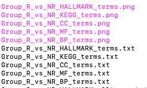

Chapter 4 Differential gene analysis
Once you obtain gene counts from the preprocessing modules of RIMA, you can compare gene expression levels for different sample phenotypes. For example, you may wish to know which genes are differentially expressed between patients who respond and do not respond to a particular treatment. In addition, you may wish to know if particular gene sets are enriched in expression between different phenotypes. These gene sets may be associated with a known biological pathway, process or molecular function.
The differential gene analysis module of RIMA allows you to perform these comparisons.
4.1 Differential gene expression using DESeq2
DESeq2 is a commonly used package that provides methods for comparison of gene expression levels. The package is described in:
Love, M.I., Huber, W., Anders, S. (2014) Moderated estimation of fold change and dispersion for RNA-seq data with DESeq2. Genome Biology, 15:550. 10.1186/s13059-014-0550-8
Details about how to run DeSeq2 are also included in the DESeq2 vignette.
4.1.1 Inputs of DESeq2
DESeq2 accepts four kinds of inputs: 1) transcript abundance files; 2) a read count matrix; 3) htseq-count files or 4) a SummarizedExperiment object.
Tximport is a tool that can import gene quantification data generated by Salmon (quant.sf) and convert the data into a gene-level abundance format that DESeq2 can use. RIMA generated quant.sf files during the preprocessing module.
As a part of using tximport, Ensemble transcript IDs are converted into gene names. RIMA contains a tx2gene.csv file with transcript IDs and gene names as below:
ID,GENENAME
ENST00000000233.8,ARF5
ENST00000000412.6,M6PR
ENST00000000442.9,ESRRA
ENST00000001008.5,FKBP4
ENST00000001146.5,CYP26B1
ENST00000002125.7,NDUFAF7
ENST00000002165.9,FUCA2
ENST00000002501.9,DBNDD1
ENST00000002596.5,HS3ST1Tximport uses the quant.sf files generated by Salmon and the tx2gene.csv file to generate matrices as described in DESeq2:
4.2 Different gene expression analysis
After creating the transcript abundance file, we are ready to find differentially expressed genes between your selected conditions. If you have identified a batch effect in your earlier analysis, DESeq2 can be run to account for this batch effect. We will first describe how to run DESeq2 without a batch effect. We will then describe how to run DESeq2 when a batch effect exists.
4.2.1 Running DESeq2 without batch effect
We will run DESeq2 to determine differential expression for a particular phenotype. In our case, we are interested in the genes that are differentially expressed between responders and non-responders. For this example, the Group column in the metasheet.csv has been set up with “R”, “NR” or “NA” as shown in Chapter 2.3 and the config.yaml file is set up with
- the “batch” parameter set to false;
- “design” set to Group
- “Treatment” set to R
- “Control” set to NR
as seen in Chapter 2.3.
This results in a DESeq call like the following:
ddsTxi <- DESeqDataSetFromTximport(txi,
colData = samples,
design = ~ Group)
dds <- DESeq(ddsTxi)4.2.2 Running DESeq2 with batch effect
DESeq2 can account for any batch effect by providing the batch variable as a covariate. If your batch effect analysis from the preprocessing module indicated that there is a batch effect in your samples, set the “batch” field in config.yaml to the appropriate column name in your metasheet.
#########Cohort level analysis parameters################
design: Group # Condition on which to do comparsion (as set up in metasheet.csv)
Treatment: R # Treatment use in DESeq2, corresponding to positive log fold change
Control: NR # Control use in DESeq2, corresponding to negative log fold change
batch: syn_batch # Options: 'false' or a column name from the metasheet.csv. We use the information in “batch” for DESeq2 in the following manner, where “syn_batch” is the column designated in the config.yaml file:
ddsTxi <- DESeqDataSetFromTximport(txi,
colData = samples,
design = ~ syn_batch + Group)
dds <- DESeq(ddsTxi)4.2.3 Output from DESeq2
DESeq2 output includes values for baseMean, log2FoldChange, lfcSE, stat, pvalue, padj. These fields have the following meanings:
- baseMean = the average of the normalized counts for all samples
- Log2FoldChange = log base 2 fold changes for the condition tested. For example if the file is Responder_responder_VS_nonresponder_DESqe2_raw.txt, Log2FoldChange will be the estimated logarithmic fold change log2(responder/nonresponder).
- lfcSE = Log2FoldChange Standard Error
- stat= Wald statistic
- pvalue = Wald test p value for the Log2FoldChange estimate
- padj. = FDR adjusted p value (Benjamini-Hochberg adjusted p value)
{comparison condition}_DEseq2_raw.txt lists Gene names directly from the DESeq2 output. It also contains a value for -log10(padj).
4.2.4 Volcano Plot(s)
Volcano plots are often used to visualize the results of differential expression analysis. The x axis represents the log2FC, and the y axis represent the -log10(P.value). Up-regulated genes have positive log2FCs and down-regulated genes have negative log2FCs.
Below is an example of a volcano plot from the previous differential expression analysis. Genes that meet the following criteria are labeled:
- FDR < 0.05
- absolute Log2FoldChange > 1

Figure 4.1: Volcano plot
4.3 Gene set enrichment analysis (GSEA)
GSEA was developed by UC San Diego and the Broad Institute. It is described in
Subramanian, Tamayo, et al. (2005, PNAS 102, 15545-15550) and Mootha, Lindgren, et al. (2003, Nat Genet 34, 267-273).
Gene Set Enrichment Analysis can be used to detect patterns in differential expression that affect particular gene pathways, molecular functions, cellular components or processes. RIMA uses the clusterProfile R package to look for enrichment in the following gene sets:
- KEGG canonical pathways
- Gene Ontology – including Biological Process (BP), Cellular Component (CC) and Molecular Function (MF).
- MSigDB Hallmark gene sets
RIMA uses a ranked list of DESeq2 outputs. Ranking is based on the following:
sign(data$log2FoldChange) * (-log10(data$pvalue))GSEA output is reported in both text and figure outputs:
Example output folder structure 
Each of these tab separated files contains the following information:
- ID = ID of the gene set
- Description = description of the gene set
- setSize = number of genes in the gene set after filtering out genes not in the expression data.
- enrichmentScore = the degree to which the gene set is enriched in the top or bottom of the ranked set of genes.
- NES = normalized gene enrichment score.
- pvalue = nominal p value
- p.adjust = adjusted p value; RIMA sets pAdjustMethod to ‘BH’ (Bejamini Hochberg) when running clusterProfiler
- qvalues = q value (FDR as implemented by GSEA)
- rank = the position in the ranked list at which the maximal enrichment score was achieved.
- leading_edge = 3 statistics (tags, list and signal) on the subset of genes that most influence the enrichment score
- core_enrichment group = the subset of genes that contribute most to the enrichment score.
- significance = a representation of the p.adjust value using stars. One star is set for p.adjust <0.1, two stars <0.5 and three stars < 0.01.
Please see the clusterProfile tutorial for more information about these values.
Below is an example of the figure output for GSEA using the Hallmark genesets.

Figure 4.2: Hallmark gene set enrichment output
4.4 Single sample gene set enrichment analysis (ssGSEA)
ssGSEA is a different method of trying to find enriched pathways in your dataset. GSEA uses the differential expression patterns of all samples to generate enrichment scores based on phenotypic differences. In contrast, ssGSEA generates enrichment scores for each sample. The ssGSEA results can then be used to look for outliers in your dataset or to compare enriched pathways among samples. Please see ssGSEA for more information.
The inputs to ssGSEA are log2 transformed tpms with batch effects removed if needed. RIMA provides ssgsea results for the KEGG and Hallmark gene sets.